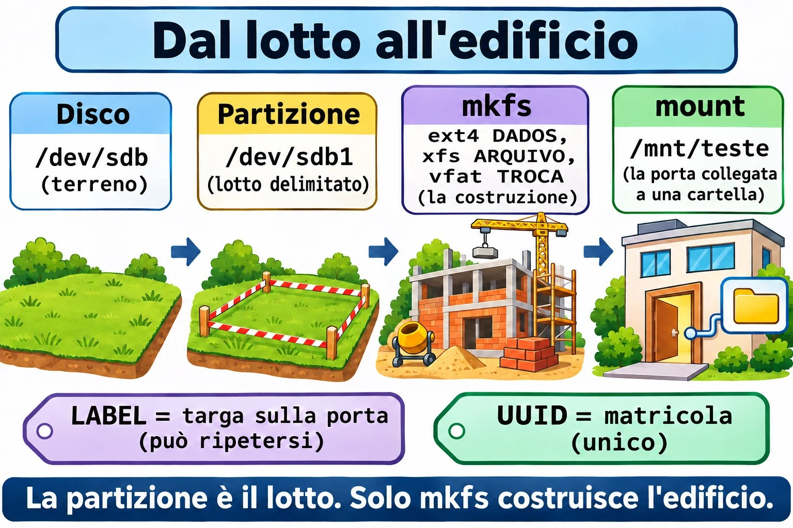
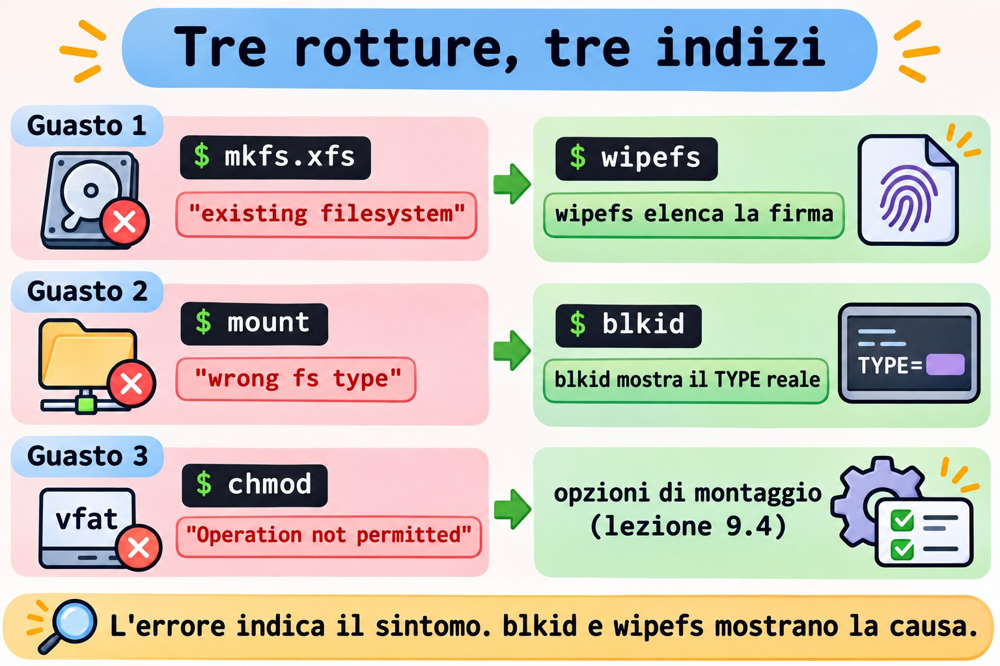

Lezione 9.3 · File system
In Windows formatti una partizione da Gestione disco e scegli NTFS. In Linux, la partizione della lezione 9.2 è solo uno spazio delimitato: nulla di ciò che ci scrivi ha ancora un indirizzo. In questa lezione crei tre file system diversi (ext4, XFS e VFAT) sulle tre partizioni del disco nuovo, confronti il comportamento di ciascuno e impari a leggerne l'identità.
Il cuore di questa lezione: sapere che partizione e file system sono cose separate; creare con
mkfs.ext4,mkfs.xfsemkfs.vfat; leggere tipo, etichetta e UUID conblkidelsblk -f; montare temporaneamente per provare; e controllare il bersaglio prima di qualsiasi comando che cancella. Il resto è approfondimento.
| Scheda | |
|---|---|
| Modulo | M9 · Storage, lezione 3 di 7 |
| Quando | Settimana 13 |
| Alla fine | Tre file system creati su scsi1, con etichette DADOS, ARQUIVO e TROCA, e nulla montato in modo permanente |
| Prerequisiti | Lezioni 9.1 e 9.2 |
| Durata | circa 2h |
| Snapshot | m9a3-inicio e m9a3-fim su rocky-lab e debian-lab |
1 · Riscaldamento
Rispondi prima di leggere.
- Una partizione appena creata può già contenere file? Perché?
- Cosa succede ai dati di una partizione quando lanci
mkfssu di essa? - Due dischi hanno la stessa etichetta. Perché è un problema?
2 · Perché conta
| La richiesta | La risposta sbagliata | Cosa provoca |
|---|---|---|
| "Il disco nuovo non si monta" | Provare mount con tipi diversi finché uno funziona | Nasconde l'errore vero: la partizione non è mai stata formattata |
| "Ho formattato il disco sbagliato" | Lanciare mkfs su /dev/sdb, "perché ieri era sdb" | Perdi i dati. L'ordine dei nomi sdX cambia da un boot all'altro |
| "Devo ridurre questo volume" | Provare a restringere un XFS | XFS non si restringe. Si ricrea e si ripristina |
"La chiavetta FAT non accetta chmod" | Insistere con sudo | VFAT non ha proprietario né permessi. Si risolve al montaggio |
3 · Modello mentale
Il disco è un terreno, e la partizione è un lotto delimitato. Un lotto vuoto non ha indirizzo.
mkfsè il cantiere: costruisce l'edificio con l'indice delle stanze (gli inode), il giornale dei lavori (il journal) e il registro. L'etichetta è la targhetta sulla porta: nome umano, può ripetersi. L'UUID è la matricola al catasto: unico, generato in cantiere.mountcollega soltanto la porta dell'edificio a una cartella dell'albero.
Disco → Partição (lote) → mkfs (obra) → mount (porta)
/dev/sdb /dev/sdb1 ext4 DADOS /mnt/teste
/dev/sdb2 xfs ARQUIVO (um de cada vez)
/dev/sdb3 vfat TROCA
Identidade de um sistema de arquivos:
TYPE ext4, xfs, vfat como o espaço foi organizado
LABEL DADOS nome humano, mutável, pode repetir
UUID gerado pelo mkfs único: é o que o fstab usa (aula 9.4)Leggi da sinistra a destra: mkfs tocca solo la partizione, e mount collega solo il risultato a una cartella.


Ponte Windows
| In Windows | In Linux | Dove il paragone inganna |
|---|---|---|
| Gestione disco, "Formatta" | mkfs.TIPO | Niente procedura guidata e niente domande |
| NTFS | ext4 o XFS | NTFS fa tutto. In Linux la scelta dipende dal profilo d'uso |
| FAT32 della chiavetta | VFAT | Stesso comportamento: niente proprietario, niente permessi |
Lettera di unità (E:) | Punto di montaggio | Colleghi il file system dove vuoi |
| Nome del volume | LABEL | Uguale: può ripetersi. Il GUID del volume è l'UUID |
4 · L'essenziale
Partizione non è file system: mkfs
La 9.2 ha creato il lotto. Manca il cantiere. Ogni mkfs.TIPO scrive le strutture sulla partizione indicata e non chiede conferma se è vuota. Per questo l'abitudine viene prima: lsblk e /dev/disk/by-id/.
| Tipo | Comando | Cosa fa ogni opzione |
|---|---|---|
| ext4 | sudo mkfs.ext4 -L DADOS DISPOSITIVO | -L imposta l'etichetta |
| XFS | sudo mkfs.xfs -L ARQUIVO DISPOSITIVO | -L imposta l'etichetta |
| VFAT | sudo mkfs.vfat -F 32 -n TROCA DISPOSITIVO | -F 32 sceglie FAT32, -n imposta il nome del volume |
Se la partizione ha già un file system, mkfs.xfs rifiuta. Non forzare: scopri prima cosa c'è lì.
Leggere l'identità
| Voglio... | Comando |
|---|---|
| Tipo, etichetta e UUID di tutto | sudo blkid |
| Albero con tipo, etichetta, UUID e montaggio | lsblk -f |
| Dettagli di ext4 | sudo tune2fs -l DISPOSITIVO |
| Dettagli di XFS (montato) | xfs_info PONTO_DE_MONTAGEM |
| Etichetta di ext4 | sudo e2label DISPOSITIVO |
| Etichetta di XFS | sudo xfs_admin -l DISPOSITIVO |
| Etichetta di VFAT | sudo fatlabel DISPOSITIVO |
blkid legge ciò che è scritto sul disco. lsblk -f mostra lo stesso, più il montaggio.
Etichette
| ext4 | XFS | VFAT | |
|---|---|---|---|
| Lunghezza massima | 16 | 12 | 11 |
| Cambiare | e2label DISP NOVO | xfs_admin -L NOVO DISP | fatlabel DISP NOVO |
| Con la partizione montata | Si può | Non si può | Si può |
Usa le maiuscole e niente spazi. L'UUID non cambia con l'etichetta.
Confronto: ext4 × XFS × VFAT
| ext4 | XFS | VFAT (FAT32) | |
|---|---|---|---|
| Predefinito in | Debian | Rocky | chiavette, partizione EFI |
| Journal | Sì | Sì | No |
| Restringere | Sì, smontato | Mai | Solo con strumenti extra |
| Proprietario e permessi | Sì | Sì | No (arrivano dal montaggio) |
| Dimensione massima del file | 16 TiB | 8 EiB | 4 GiB meno 1 byte |
Il journal è un diario: il sistema annota cosa sta per fare prima di farlo, e dopo un'interruzione di corrente evita la lunga verifica. Senza journal, VFAT può restare corrotto.

Vedere le firme: wipefs
wipefs DISPOSITIVO, senza opzioni, si limita a elencare le firme dei file system. Con -a, le cancella. In questa lezione, -a compare solo contro un file immagine, nel Guasto 1.
Rocky × Debian
| Rocky | Debian | |
|---|---|---|
| Predefinito dell'installer | XFS | ext4 |
mkfs.xfs, xfs_info, xfs_admin | xfsprogs, già presente | sudo apt install xfsprogs |
mkfs.vfat, fatlabel | sudo dnf install dosfstools | sudo apt install dosfstools |
mkfs.ext4, tune2fs, e2label | e2fsprogs, già presente | e2fsprogs, già presente |
| Verificare il pacchetto | rpm -q xfsprogs dosfstools | dpkg -s xfsprogs dosfstools |
I comandi di mkfs e di lettura sono identici su entrambe.
5 · Lab guidato
Passo 0 · Snapshot e pacchetti. Il backup su PBS-LAB della 9.1 resta valido: lo snapshot non è un backup. In Proxmox:
qm snapshot 201 m9a3-inicio
qm snapshot 202 m9a3-inicioSu rocky-lab:
sudo dnf install -y dosfstools gdisk
rpm -q xfsprogs e2fsprogs dosfstoolsSu debian-lab:
sudo apt install -y xfsprogs dosfstools gdisk
dpkg -s xfsprogs dosfstools | grep -E '^(Package|Status)'rpm -q e dpkg -s dicono se il pacchetto è installato. I tre nomi devono comparire senza errori.
Passo 1 · Controllare il bersaglio. Questa fase non scrive nulla. Su rocky-lab (lo stesso su debian-lab):
ls -l /dev/disk/by-id/ | grep drive-scsi1
D=/dev/disk/by-id/scsi-0QEMU_QEMU_HARDDISK_drive-scsi1
lsblk -f "$D"
sudo wipefs "$D-part1" "$D-part2" "$D-part3"D= salva il nome stabile del disco in una variabile. In un altro terminale, definiscila di nuovo. Output atteso:
... scsi-0QEMU_QEMU_HARDDISK_drive-scsi1 -> ../../sdb
... scsi-0QEMU_QEMU_HARDDISK_drive-scsi1-part1 -> ../../sdb1
(part2 e part3 também)
NAME FSTYPE FSVER LABEL UUID FSAVAIL FSUSE% MOUNTPOINTS
sdb
├─sdb1
├─sdb2
└─sdb3Questo è il disco della lezione 2.2, ampliato a 4 GB nella 9.1. Su rocky-lab, il link /dev/lab-dados della 2.2 punta allo stesso disco, ma usa il by-id, che esiste su entrambe le VM. Il tuo sdb potrebbe avere un altro nome. FSTYPE vuoto e wipefs senza output dimostrano che le partizioni sono vuote. Se compare un tipo qualsiasi, fermati: il disco non è quello che pensi, oppure la 9.2 non è finita.
Passo 2 · ext4 sulla partizione 1.
sudo mkfs.ext4 -L DADOS "$D-part1"mke2fs 1.46.5 (30-Dec-2021)
Creating filesystem with 262144 4k blocks and 65536 inodes
Filesystem UUID: 3f6c0a52-9b1e-4d4a-8d57-2f0e6c1d9a11
Superblock backups stored on blocks:
32768, 98304, 163840, 229376
Allocating group tables: done
Writing inode tables: done
Creating journal (8192 blocks): done
Writing superblocks and filesystem accounting information: donePasso 3 · XFS sulla partizione 2.
sudo mkfs.xfs -L ARQUIVO "$D-part2"L'output è una tabella meta-data=, data =, naming =, log =.
Passo 4 · VFAT sulla partizione 3.
sudo mkfs.vfat -F 32 -n TROCA "$D-part3"mkfs.fat 4.2 (2021-01-24)Passo 5 · Leggere l'identità.
sudo blkid "$D-part1" "$D-part2" "$D-part3"
lsblk -f "$D"/dev/sdb1: LABEL="DADOS" UUID="3f6c0a52-9b1e-4d4a-8d57-2f0e6c1d9a11" BLOCK_SIZE="4096" TYPE="ext4" PARTUUID="..."
/dev/sdb2: LABEL="ARQUIVO" UUID="a1d3...e7" BLOCK_SIZE="512" TYPE="xfs" PARTUUID="..."
/dev/sdb3: LABEL="TROCA" UUID="7C2E-1A09" BLOCK_SIZE="512" TYPE="vfat" PARTUUID="..."
NAME FSTYPE FSVER LABEL UUID FSAVAIL FSUSE% MOUNTPOINTS
sdb
├─sdb1 ext4 1.0 DADOS 3f6c0a52-...
├─sdb2 xfs ARQUIVO a1d3...
└─sdb3 vfat FAT32 TROCA 7C2E-1A09L'UUID di VFAT è corto: è il numero di serie del volume. I tuoi valori saranno diversi.
Passo 6 · Dettagli di ogni tipo.
sudo tune2fs -l "$D-part1" | grep -E 'Filesystem (features|volume name|UUID)|Block count|Reserved block|Inode count|Journal'
sudo xfs_admin -l "$D-part2"
sudo fatlabel "$D-part3"tune2fs -l elenca il superblocco di ext4: cerca has_journal. xfs_admin -l mostra label = "ARQUIVO".
Passo 7 · Montare uno alla volta. Monta, confronta e smonta prima di passare al successivo.
sudo mkdir -p /mnt/teste
sudo mount "$D-part1" /mnt/teste
df -hT /mnt/teste
ls -la /mnt/teste
sudo touch /mnt/teste/a.txt
sudo chmod 600 /mnt/teste/a.txt
ls -l /mnt/teste/a.txt
sudo umount /mnt/testeFilesystem Type Size Used Avail Use% Mounted on
/dev/sdb1 ext4 974M 24K 923M 1% /mnt/testeext4 mostra la cartella lost+found, e chmod 600 funziona. Ripeti con XFS (part2), aggiungendo xfs_info /mnt/teste | head -n 4. XFS non ha lost+found, e df mostra già alcune decine di MB usati prima di qualsiasi file: sono i metadati e il journal. Ora VFAT:
sudo mount "$D-part3" /mnt/teste
df -hT /mnt/teste
sudo touch /mnt/teste/a.txt
ls -l /mnt/teste/a.txt
sudo chmod 600 /mnt/teste/a.txt
sudo umount /mnt/teste-rwxr-xr-x. 1 root root 0 ... /mnt/teste/a.txt
chmod: changing permissions of '/mnt/teste/a.txt': Operation not permittedSu VFAT, tutti i file appartengono a root e hanno rwxr-xr-x, e chmod fallisce, anche con sudo. È ciò che il Guasto 3 approfondisce.
Passo 8 · Cambiare le etichette e ripristinarle.
sudo e2label "$D-part1" TESTE
sudo e2label "$D-part1" DADOS
sudo xfs_admin -L TESTE "$D-part2"
sudo xfs_admin -L ARQUIVO "$D-part2"
lsblk -f "$D"xfs_admin -L richiede la partizione smontata. Alla fine, le etichette devono essere DADOS, ARQUIVO e TROCA: la 9.4 ne dipende.
Passo 9 · debian-lab. Ripeti i passi da 1 a 8 su debian-lab. I comandi sono gli stessi, e gli UUID saranno diversi.
Decidi 1
Un volume di file di progetto crescerà per mesi, e il team potrebbe dover restituire spazio a un altro volume. Quale file system?
A) XFS, il predefinito di Rocky. B) ext4. C) VFAT, che Windows legge.
Scegli un'opzione prima di continuare.
| Se hai scelto | Risultato | Perché |
|---|---|---|
| A | Rischio | XFS cresce, ma non si restringe mai. Restituire spazio richiede di ricrearlo |
| B | Giusto | Cresce da montato e si restringe da smontato |
| C | Sbagliato | Niente permessi, niente journal, file fino a 4 GiB |
Da ricordare: scegli in base a ciò che dovrai fare dopo.
Decidi 2
Devi formattare "il disco da 4 GB". lsblk mostra sdb e sdc, da 4 GB e 3 GB. Ieri il disco da 4 GB era sdc. Cosa fai?
A) Usare sdc, come ieri. B) Controllare ls -l /dev/disk/by-id/ e lsblk -f, e solo dopo formattare. C) Lanciare wipefs -a su entrambi.
Scegli un'opzione prima di continuare.
| Se hai scelto | Risultato | Perché |
|---|---|---|
| A | Pericolo | L'ordine dei nomi sdX non è garantito |
| B | Giusto | Il by-id identifica il disco. FSTYPE vuoto lo conferma |
| C | Disastro | Cancelli le firme del disco che aveva dati |
Da ricordare: lsblk e by-id prima di scrivere.
6 · Rompi e ripara
Qui usi un file immagine su un loop, così nessun errore tocca scsi1. Su rocky-lab:
truncate -s 512M ~/fs-teste.img
sudo losetup --find --show ~/fs-teste.img
sudo mkfs.ext4 -L PRIMEIRO /dev/loop0
losetup -alosetup --find --show stampa il nome scelto. Se non è /dev/loop0, sostituiscilo in tutti i comandi seguenti.


Guasto 1 · La partizione che ha già un proprietario
sudo mkfs.xfs -L SEGUNDO /dev/loop0Sintomo: mkfs.xfs: /dev/loop0 appears to contain an existing filesystem (ext4) e il suggerimento di usare -f.
Indagine: sudo blkid /dev/loop0 e sudo wipefs /dev/loop0 mostrano ext4 e l'etichetta PRIMEIRO.
Causa: mkfs.xfs ha rilevato una firma e ha protetto i dati.
Riparazione: in questo esercizio il contenuto non vale nulla. Cancella la firma e formatta:
sudo wipefs -a /dev/loop0
sudo mkfs.xfs -L SEGUNDO /dev/loop0Su un disco vero, usa wipefs -a solo dopo aver controllato il bersaglio.
Guasto 2 · Il tipo sbagliato
sudo mount -t ext4 /dev/loop0 /mnt/testeSintomo: mount: /mnt/teste: wrong fs type, bad option, bad superblock on /dev/loop0, missing codepage or helper program, or other error.
Indagine: sudo blkid /dev/loop0 mostra TYPE="xfs". sudo dmesg | tail -n 3 registra che il superblocco ext4 non è valido.
Causa: hai chiesto ext4 per una partizione XFS.
Riparazione: sudo mount /dev/loop0 /mnt/teste. Senza -t, mount legge il tipo scritto sul disco. Poi, sudo umount /mnt/teste.
Guasto 3 · Il VFAT che non obbedisce
sudo mkfs.vfat -F 32 -n TESTE /dev/loop0
sudo mount /dev/loop0 /mnt/teste
sudo touch /mnt/teste/x.txt
sudo chmod 600 /mnt/teste/x.txt
sudo chown nobody /mnt/teste/x.txtSintomo: Operation not permitted su chmod e chown, anche con sudo. ls -l mostra tutto come root root.
Indagine: mount | grep teste mostra vfat con fmask=0022,dmask=0022. Senza uid= e gid= nelle opzioni, il proprietario è root.
Causa: FAT non conserva né proprietario né permessi. Il kernel li inventa al montaggio, con le opzioni uid=, gid=, umask=.
Riparazione: solo tramite le opzioni di montaggio. La lezione 9.4 lo fa in /srv/troca.
Pulizia
sudo umount /mnt/teste
sudo losetup -d /dev/loop0
rm ~/fs-teste.img
losetup -a
findmnt /mnt/testelosetup -a non deve più elencare il file, e findmnt /mnt/teste non deve mostrare nulla.
7 · Trappole
| Trappola | Cosa succede | Come evitarla |
|---|---|---|
mkfs sul disco intero, invece che sulla partizione | Distrugge la tabella delle partizioni | Usa -part1, -part2, e controlla con lsblk |
Fidarsi di /dev/sdb | Formatti il disco sbagliato dopo un reboot | Usa /dev/disk/by-id/ |
| Pianificare di restringere XFS | Impossibile | Scegli ext4, oppure accetta di ricreare |
Usare -f o wipefs -a "per farlo passare" | Cancelli ciò che non hai controllato | Leggi blkid e wipefs prima |
| Dati importanti su VFAT | Niente journal, niente permessi | VFAT solo per lo scambio e per l'EFI |
8 · Quiz
Rispondi senza guardare. Le soluzioni sono alla fine della lezione.
- Qual è la differenza tra partizione e file system?
- Perché non si deve fare
mkfssu/dev/sdb1"perché ieri era questo"? - Qual è la lunghezza massima dell'etichetta in ext4, XFS e VFAT?
- Quale di questi non si restringe mai: ext4, XFS o VFAT?
- Perché
chmodfallisce su VFAT, anche consudo? - A cosa serve il journal, e quale dei tre non ce l'ha?
9 · Promemoria
Da sapere a memoria:
| Voglio... | Comando |
|---|---|
| ext4 con etichetta | sudo mkfs.ext4 -L NOME DISP |
| XFS con etichetta | sudo mkfs.xfs -L NOME DISP |
| FAT32 con nome | sudo mkfs.vfat -F 32 -n NOME DISP |
| Vedere tipo, etichetta e UUID | sudo blkid, lsblk -f |
| Elencare le firme | sudo wipefs DISP |
Da consultare:
| Voglio... | Comando |
|---|---|
| Dettagli di ext4 | sudo tune2fs -l DISP |
| Etichetta di ext4 | sudo e2label DISP [NOVO] |
| Etichetta di XFS | sudo xfs_admin -l DISP, -L NOVO |
| Etichetta di VFAT | sudo fatlabel DISP [NOVO] |
Flashcard:
- Partizione → lotto, non ancora edificio.
- XFS → cresce, non si restringe mai.
- VFAT → niente journal, niente permessi.
sdX→ cambia. Ilby-idresta.
10 · Checklist e chiusura
- [ ] Spiego la differenza tra partizione e file system
- [ ] Controllo il bersaglio con
lsblkeby-idprima di formattare - [ ] Creo ext4, XFS e VFAT, ciascuno con un'etichetta
- [ ] So cosa permette ogni tipo: restringere, journal, permessi
- [ ] Ho lasciato le tre etichette come
DADOS,ARQUIVOeTROCA, e nulla montato
Ultimo esercizio, senza guardare la lezione: su una nuova immagine da 512 MiB collegata a un loop, crea un XFS con l'etichetta LIVRE, montalo, scrivi un file, smontalo e dimostra con blkid il tipo e l'etichetta. Poi pulisci.
Snapshot di fine (in Proxmox):
qm snapshot 201 m9a3-fim
qm snapshot 202 m9a3-fim11 · Nella vita reale
Missione, sola lettura. Su un server Linux che amministri (o con autorizzazione), lancia solo:
lsblk -f
sudo blkid
findmnt -t ext4,xfs,vfat -o TARGET,SOURCE,FSTYPE,OPTIONS
df -hT -x tmpfs -x devtmpfs
sudo tune2fs -l "$(findmnt -no SOURCE /)" 2>/dev/null | head -n 12
sudo xfs_info / 2>/dev/null | head -n 4Domande a cui rispondere:
- Quali tipi di file system usa il server, e dove?
- Qualche volume ha un'etichetta ripetuta?
- C'è VFAT oltre alla partizione EFI?
Diario: annota ciò che merita attenzione. Non modificare nulla: niente mkfs, wipefs -a o fsck.
Domani, senza guardare: di' quale tipo non si restringe.
12 · Approfondire quando vuoi
- Man pages:
man mkfs.ext4,man mkfs.xfs,man mkfs.fat,man xfs_admin,man tune2fs,man blkid,man wipefs. - Red Hat: "Managing file systems", nella documentazione di RHEL 9.
- kernel.org: docs.kernel.org/filesystems (ext4 e XFS).
- util-linux: github.com/util-linux/util-linux.
- Debian: wiki.debian.org/FileSystem.
DeepTutor (http://10.1.0.149:3782, KB "Curso Linux Sysadmin"): !quiz Aula 9.3, 5 perguntas sobre mkfs, ext4, XFS e VFAT
Soluzioni commentate
Riscaldamento
- No. La partizione delimita solo lo spazio. Senza
mkfs, non esiste una struttura per registrare i file. - I dati diventano inaccessibili, perché le vecchie strutture vengono sovrascritte. Per questo, controlla il bersaglio prima.
- Il montaggio tramite
LABEL=può prendere il disco sbagliato. L'UUID è unico.
Quiz
- La partizione è un pezzo del disco, nella tabella delle partizioni. Il file system è la sua organizzazione interna, creata da
mkfs. - Perché i nomi
sdXdipendono dall'ordine in cui il kernel scopre i dischi. Usaby-id. - 16 in ext4, 12 in XFS e 11 in VFAT.
- XFS.
- Perché FAT non conserva né proprietario né permessi. Quei valori arrivano dalle opzioni di montaggio.
- Per registrare ciò che si sta per fare prima di farlo, e così riprendersi da un'interruzione senza una lunga verifica. VFAT non ce l'ha.